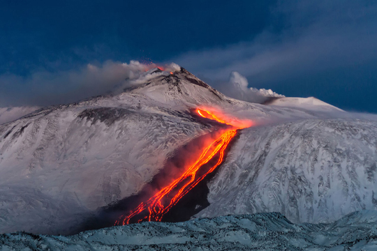

I parchi naturali italiani sono un tesoro di ecosistemi ricchi, paesaggi mozzafiato e unici legami tra uomo e ambiente. Scopri flora, fauna e le storie che rendono speciale ogni angolo protetto del nostro Paese.
Esplorali insieme a noi!

Parco
dell'Etna
Il Parco dell’Etna, istituito nel 1987, si estende intorno al vulcano attivo più alto d’Europa, simbolo della Sicilia orientale con oltre 3.300 metri di altezza. Il parco tutela un territorio unico dove la natura si esprime con colate laviche, crateri fumanti e scenari lunari, ma anche con rigogliosi boschi, agrumeti e vigneti, resi fertili dal suolo vulcanico. Tra i principali luoghi d’interesse ci sono il Cratere Centrale, i Crateri Silvestri e la spettacolare Valle del Bove. I paesi pedemontani come Zafferana Etnea, Nicolosi e Linguaglossa offrono cultura, tradizioni e gastronomia locale.
Il parco è ideale per attività all’aria aperta: trekking su sentieri di varia difficoltà, escursioni nei tunnel lavici, sci in inverno, tour in fuoristrada e percorsi enogastronomici con prodotti tipici come vino dell’Etna, pistacchi e formaggi. Dal punto di vista naturalistico, l’Etna ospita una sorprendente biodiversità: dalle coltivazioni di bassa quota ai boschi di castagni e pini, fino ai paesaggi lunari d’alta quota. La fauna comprende volpi, gatti selvatici, rapaci e specie endemiche.
Per la visita è utile partire dai Centri Visita, vestirsi a strati per affrontare le variazioni climatiche e seguire sempre le indicazioni delle autorità, soprattutto in caso di attività vulcanica. Le escursioni in quota vanno fatte con guide autorizzate.
Il Parco dell’Etna è un luogo in continua evoluzione, dove l’uomo ha imparato a convivere con la forza della natura, tra paesaggi mozzafiato e una cultura profondamente legata al vulcano.